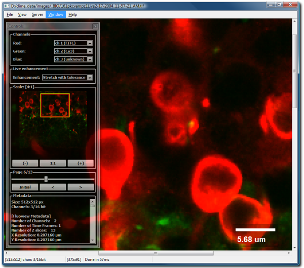
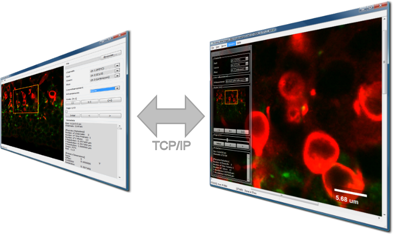
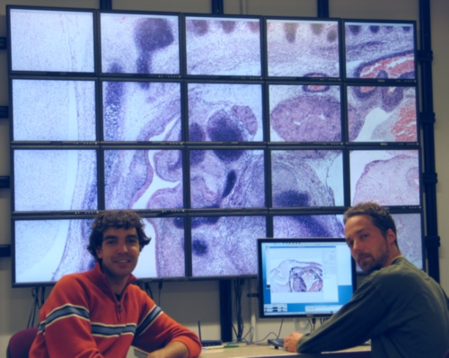

bioView is an open source and cross-platform application intended for biologists to visualize EM, Confocal, etc. imagery. It runs on Windows, MacOS X and Linux. It also provides access from the remote controller that simplifies usage of the very large screens e.g. 8000x4800 pixels composed by many monitors.

On the main screen you can see the image, it's associated metadata and scale bar if metadata provides pixel size information and can be parsed by the viewer. Also there's a semi-transparent controls window which shows image thumbnail allows navigation and channel manipulation. On the controls window you can:
bioView can receive external control clients, it uses TCP/IP connection and listens on the port specified in wv.ini file, the default is 9229. Upon connection client will receive preview of currently open image and enable controls.
 We have effectively used the client/server pair in the 20 monitor set-up. The operational system of choice was Debian Linux and we have used Distributed Multiheaded X (XDMX) that creates a virtual screen which sends commands to respective X nodes. In this set-up viewer is running on the virtual screen provided by XDMX and remote controller is running on the normal screen allowing simple navigation on the huge screen.